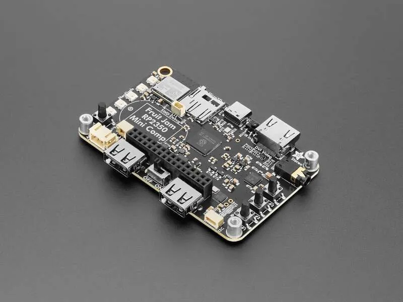

Built for gaming
FREE-WILi 2’s display CPU is nearly 100% compatible with the Adafruit Fruit Jam — hardware-compatible, with some different pin assignments — making it straightforward for anyone to port a Fruit Jam application to FREE-WILi 2. The wili team put that compatibility to the test by porting PICO-8 for retro gaming, and Doom runs on the platform too.
Buttons received a massive upgrade over the original FREE-WILi. A full 5-button d-pad joins four new ABXY-positioned buttons named home, ok, cancel, and page, plus the five under-screen context buttons — and the touch screen sits on top of all that. With 14 physical buttons and a touch screen, user input is orders of magnitude richer than before.
Every button was designed with comfort in mind so that retro gaming plays as well as it possibly can on a handheld device. FREE-WILi 2 also introduces an innovative 2-button-press-per-letter keyboard, giving users a fast and ergonomic way to enter text without a full keyboard.

Key facts
- Buttons
- 14 + touch
- Compatible
- Adafruit Fruit Jam
- Ported
- PICO-8, Doom
- Keyboard
- 2 presses per letter